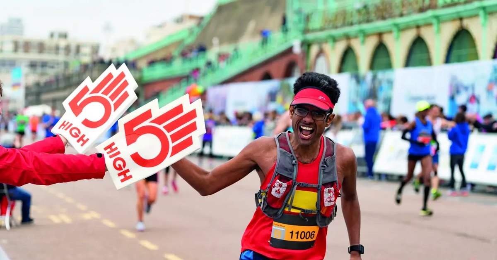

I woke up late. That’s really the whole story, but I’ll tell you the rest anyway. It was 5:45 AM on marathon morning, my alarm was set for 5, and my phone was on the floor across the room because I’d thrown it there the night before. I had exactly zero time for my usual routine. Normally I drink 500 milliliters (17 ounces) of water before I even brush my teeth. Not that morning. I ran out the door with a dry mouth and a half‑cup of coffee. The first 10 kilometers felt fine. Adrenaline, I guess. I was hitting my target pace, crowds cheering, the whole thing. But around mile 8, a dull ache started behind my eyes. Not sharp, just heavy. Like someone was pushing their thumbs into my temples from the inside. I told myself it was nothing. Tension. Crowd noise. Too much caffeine. Mile 12, the headache got meaner. Every footstrike sent a little shockwave up my neck. I started breathing through my mouth because my nose felt dry and scratchy. Somewhere around mile 16, I realized I hadn’t peed since before the start. That’s about three hours. Not normal for me. By mile 20, I was walking. Not because my legs gave out, but because the headache was so bad that running made me nauseous. I watched my goal pace slip away. The 4‑hour pace group passed me. Then the 4:15 group. I finished in 4:38, almost an hour slower than my training predicted. My head was pounding, my lips were cracked, and my urine that evening looked like iced tea — dark amber, almost brown. I don’t think I’ve ever been more frustrated with my own body. Because I’m the hydration expert. I literally write calculators for this. And I let a stupid morning mistake ruin months of training. The math is embarrassing. Overnight, you lose about 500‑800 milliliters (17‑27 ounces) of fluid just from breathing and sweating while you sleep. That’s called insensible water loss. I didn’t replace any of it before the race. Then I drank maybe 250 milliliters (8 ounces) of coffee, which is a diuretic. The net hydration from coffee is about 80‑90% of the volume, so that coffee gave me maybe 200 milliliters (7 ounces) of net fluid. Not nearly enough. Then during the race, I drank about 800 milliliters (27 ounces) of plain water, which is “the baseline,” but spread over 4.5 hours that’s only about 180 milliliters (6 ounces) per hour. My sweat rate in cool conditions is around 800 milliliters per hour. So I was losing fluid way faster than I was taking it in. By the end, I had lost about 2.5 liters (85 ounces) of fluid. That’s more than 3% of my body weight. For a 60‑kilogram (132‑pound) person, that’s a deficit of almost 2 kilograms. Sports science says a 2% loss impairs performance. 3% is in the danger zone. Headaches, nausea, reduced coordination, cognitive fog. I had all of them. The fix was so simple that it still makes me angry. A 500‑milliliter bottle of water on my nightstand. That’s it. If I had drunk that before getting out of bed, I would have replaced the overnight loss. Then another 500 milliliters (17 ounces) with breakfast, two hours before the start. Then 250 milliliters (8 ounces) 15 minutes before the gun. That’s 1.25 liters (42 ounces) before the race even started. After that, I only would have needed to maintain, not play catch‑up. I also learned something about urine color that weekend. The chart I use with my clients is simple. Clear or pale straw 🟡 means you’re good. Transparent yellow is fine. Dark yellow 🟠 means you’re behind — drink 500 mL now. Amber 🟤 means moderate dehydration — drink a full liter. I was amber after the marathon. My own chart. I ignored it. Now I have a rule. Morning hydration is non‑negotiable. The first thing I do when I open my eyes is reach for the bottle on my nightstand. I don’t check my phone. I don’t talk to anyone. I drink 500 milliliters (17 ounces) within ten minutes of waking. Then I wait 20 minutes before coffee. That 20‑minute gap lets the water absorb and gives my stomach a break. When I do this, I don’t get afternoon headaches. My skin looks better. My workouts feel stronger. And I don’t run marathons an hour slower than I should. I started tracking this habit with a simple streak counter. The first week I missed two days. The second week I missed one. By the third week, it was automatic. Now I have a 200‑something day streak. I’m not bragging — I’m saying that if a chaotic person like me can make it stick, anyone can. For my clients who are training for endurance events, I prescribe a two‑day hydration load before race day. Not overdrinking, just being intentional. For two days before, they drink 500 mL (17 ounces) extra per day, split between morning and evening. They also add a pinch of salt to their breakfast or take an electrolyte tablet. That pre‑load means they start the race already balanced, not playing catch‑up from a morning deficit. I have a tool that sets this up automatically.Daily Water Intake Calculator
Enter your body weight, climate, and activity level. Get a baseline goal, then add the morning 500mL as a non‑negotiable.
All data stays in your browser — we never see it.
Hydration Goal Setter
Set a custom daily goal, track your streak, and get smart reminders that adapt to your progress.
All data stays in your browser — we never see it.